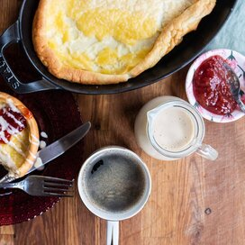

German Pancakes with Buttermilk Sauce

Description:
This is a great breakfast item, now a tradition for my family. It tastes like French toast without the bread!
Ingredients:
- 6 eggs
- 1 cup milk
- 1 cup all-purpose flour
- 2 tablespoons butter, melted
- 1 1/2 cups white sugar
- 3/4 cup buttermilk
- 1/2 cup butter
- tablespoons light corn syrup
- 1 teaspoon baking soda
- 2 teaspoons vanilla extract
Steps:
- Preheat oven to 400 degrees F (200 degrees C). Grease a 9x13 inch baking pan with the melted butter.
- Place eggs, milk and flour in a blender and whip until smooth. Pour into prepared pan.
- Bake in preheated oven for 20 minutes, or until golden.
- In a small saucepan, combine sugar, buttermilk, butter, corn syrup, baking soda; boil for 7 minutes. Remove from heat and stir in vanilla. Spoon over slices of pancake.